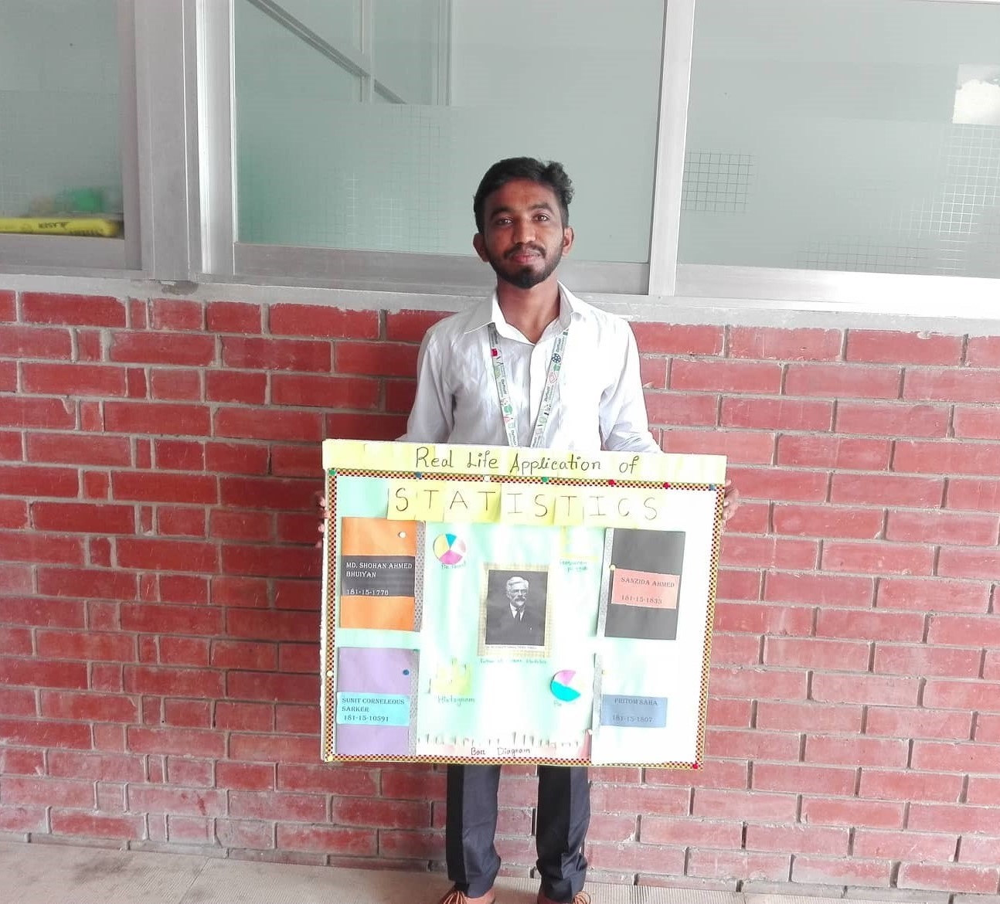
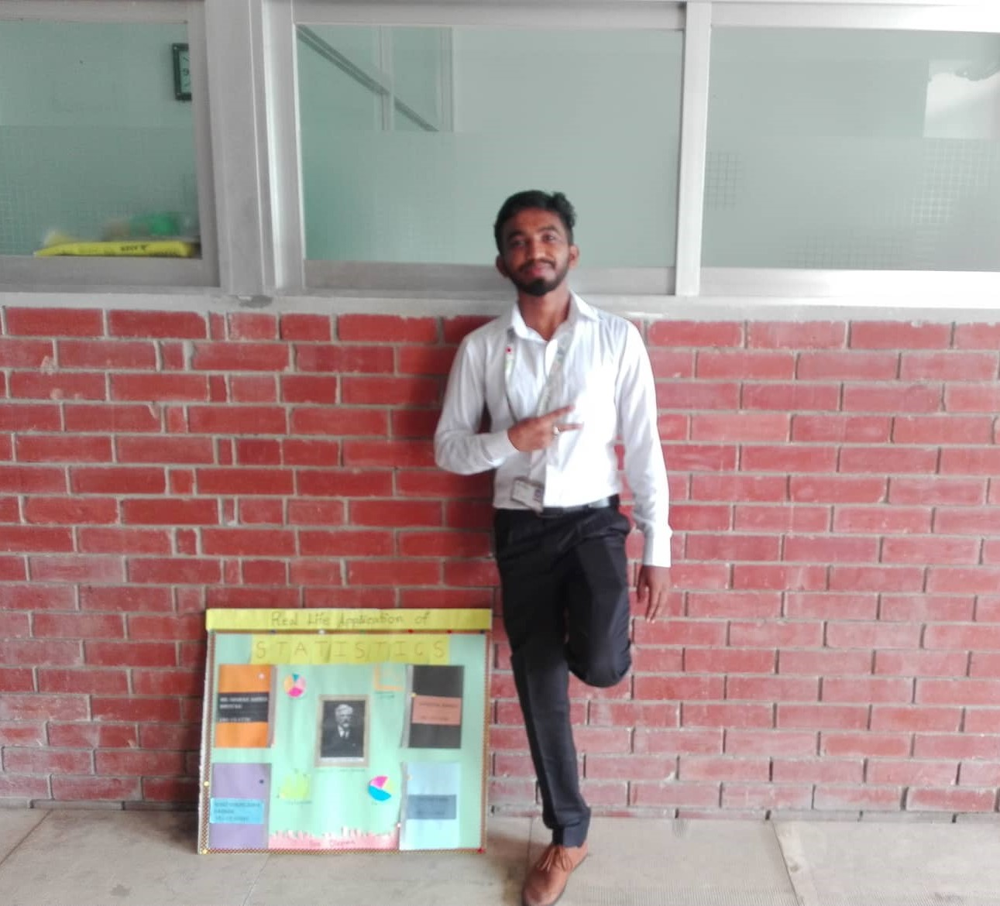

Poster PresentationCourse Title : Statistics and probability |
|
|  |  |
Excitedly presenting my first poster, a culmination of passion and dedication in applying statistics to real-world scenarios, marking the beginning of an exhilarating journey into data analysis and discovery.
Follow Me